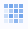

Letztes Update: 10.09.2019
Schaltfläche Gitternetzlinien hinzufügen verwenden
Falls Sie eine Heatmap aus kategorialen XY-Werten erstellen, sehen Sie die Schaltfläche Gitternetzlinien hinzufügen , wenn Sie auf eine Zelle auf der Heatmap klicken. Sie können auf diese Schaltfläche klicken, um Rahmen für jede Zelle hinzuzufügen.
Um die Rahmenfarbe und den Rahmenstil weiter benutzerdefiniert anzupassen, klicken Sie doppelt aud die Achse, um den Dialog Achse zu öffnen. Gehen Sie zur Registerkarte Gitternetz und ändern Sie nach Bedarf Nebengitternetzlinien, Farbe, Stil und Dicke.
Gitternetzlinien manuell hinzufügen
Beachten Sie, dass die Schaltfläche Gitternetzlinien hinzufügen nur verfügbar ist, wenn das Inkrement der großen und kleinen Hilfsstriche von X- und Y-Achse auf “1” gesetzt ist. Falls die Schaltfläche auf Ihrer Heatmap nicht verfügbar ist, können Sie

Abstände als Zellrahmen verwenden
Eine andere Möglichkeit, Rahmen hinzuzufügen, besteht im Hinzufügen von Abständen zwischen den Zellen.
Falls Sie eine Heatmap aus einer virtuellen Matrix zeichnen, können Sie folgendermaßen benutzerdefinierte Hilfsstrichsbeschriftungen hinzufügen.
|
Hinweis:
Bitte verwenden Sie nicht den Typ Spaltenname oder -beschriftung und geben Sie Ihren benutzerdefinierten Beschriftungstext in die Spaltenbeschriftungszeile im Quellarbeitsblatt ein. Für ein Diagramm aus einer virtuellen Matrix kann diese nicht auf das Quellarbeitsblatt verweisen. |
Schlüsselwörter:Heatmap, Rahmen, Gitternetzlinien, Kontur, Beschriftung, Grenze
Origin-Version mind. erforderlich: 2019